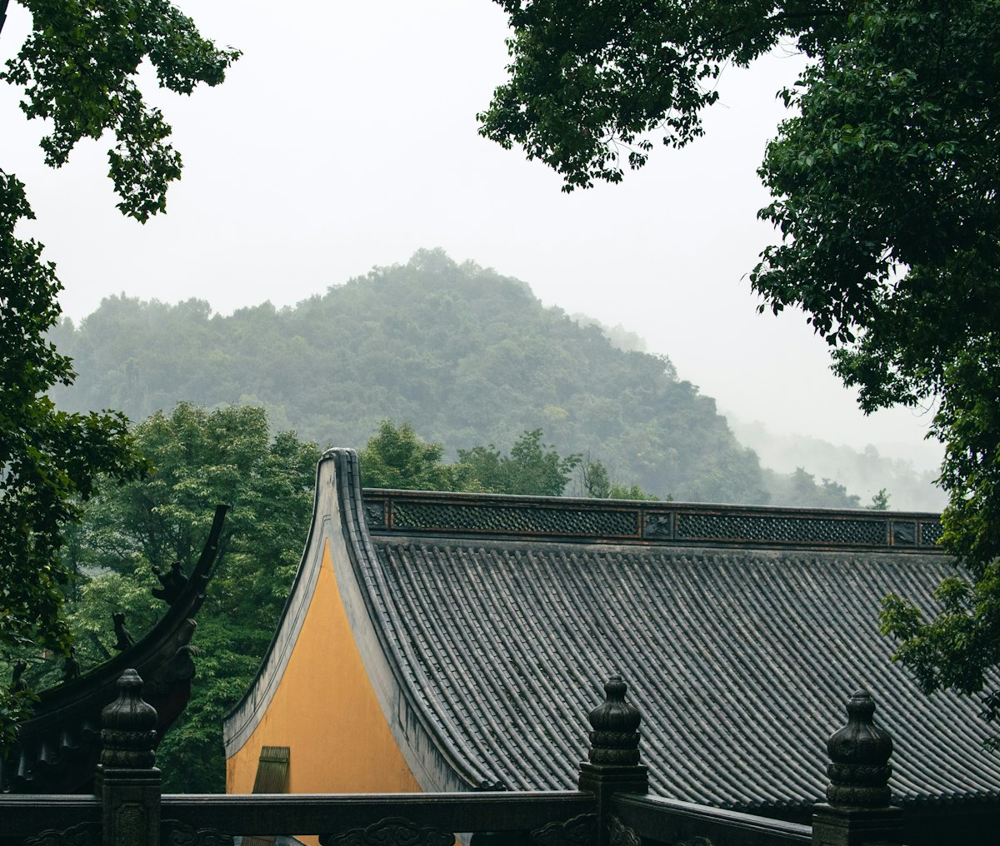
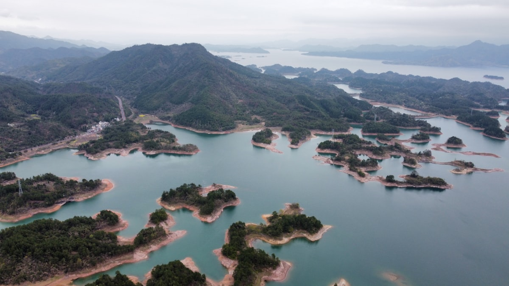
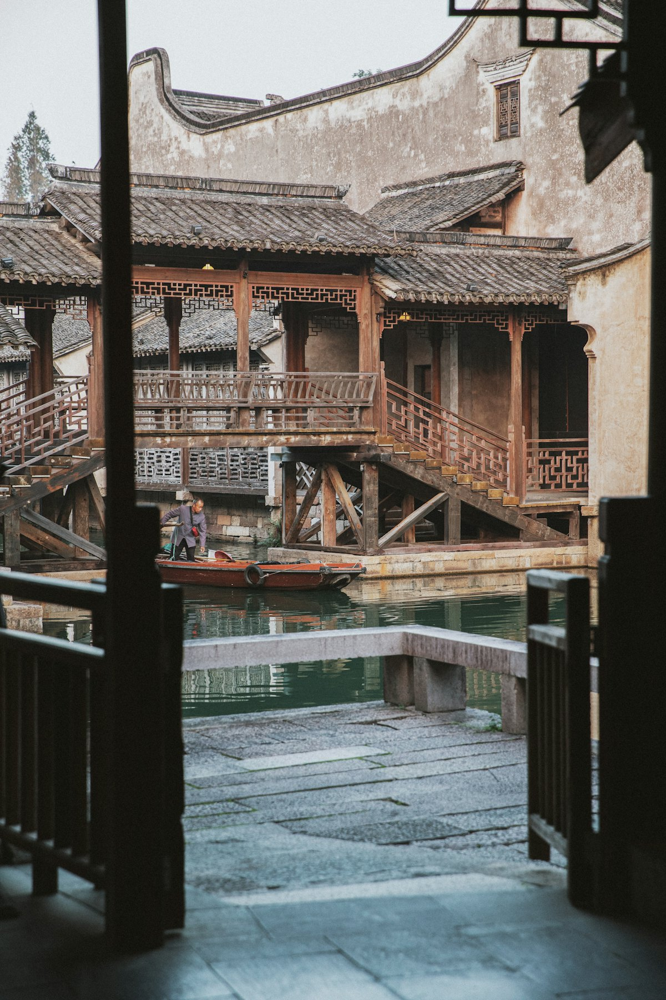
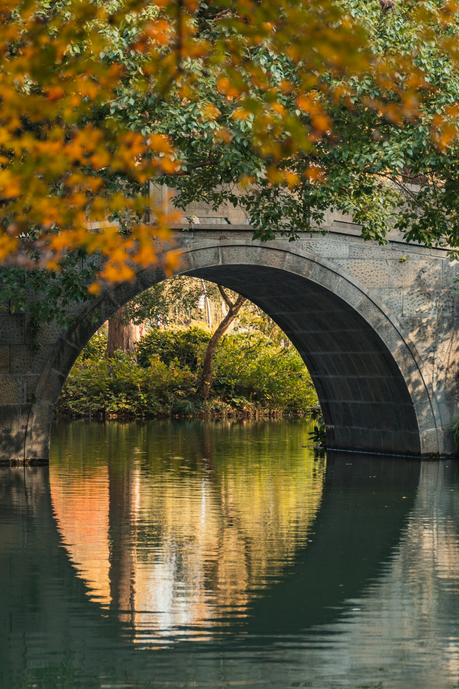
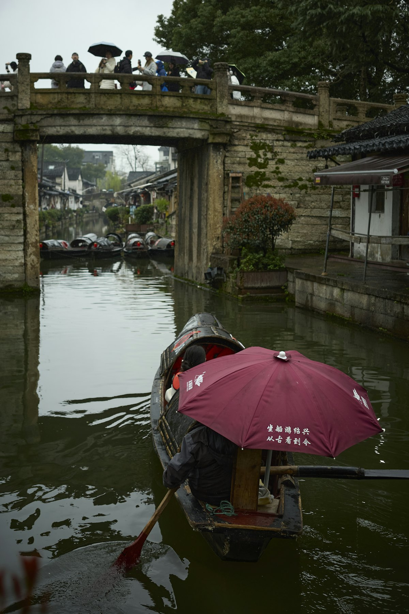

1核心结论
杭州
→
西湖/灵隐
→
千岛湖
→
乌镇
→
绍兴
→
普陀山
→
返程
🕐 10 天怎么安排最合理
浙江是「湖、山、水乡、海天」样样俱全的江南：杭州看西湖与灵隐，千岛湖看千岛碧水，乌镇看枕水人家，绍兴看文脉，普陀山看海天佛国。城市间高铁 1–2 小时可达，10 天环线由西向东，节奏从容不赶。
| 事项 | 结论 |
|---|---|
| 事项 | 结论 |
| 推荐方案 | 10 天 9 晚（杭州 3 天 + 千岛湖 2 天 + 乌镇 2 天 + 绍兴 1 天 + 普陀山 2 天） |
| 返程约束 | 第 10 天下午/晚间返程 |
| 行程链 | 杭州 → 千岛湖 → 乌镇 → 绍兴 → 普陀山 |
| 预算（人均） | 经济 4000–5200 ／ 标准 6500–8500 ／ 舒适 10000–13000 |
| 三件提前事 | ① 普陀山船票+住宿提前 1 周订 ② 乌镇西栅住宿含门票提前抢 ③ 灵隐寺/雷峰塔提前 1–3 天购票 |
| 季节提醒 | 3–4 月春花与 10–11 月秋桂最佳；7–9 月台风季海岛班次可能停航 |
| 交通卡 | 杭州地铁手机扫码，高铁串联各城，普陀山靠轮渡 |
⚠️ 两个容易忽略的点
① 普陀山只能乘船到达（朱家尖/沈家门码头），旺季与台风季船票紧张、班次调整频繁，务必提前订票并留足候船时间。② 乌镇西栅门票是当日有效、单次进出，入住景区内客栈可以刷指纹多次进出，选对住宿能省一天二次购票。
2推荐行程 · 10 天版
以下为 10 天 9 晚由西向东的环线推荐节奏。湖山、水乡、海岛分三段走，避免疲劳。
| 日期 | 行程 | 过夜地 | 主题 |
|---|---|---|---|
| D1 抵杭 | 抵达杭州，入住湖滨/河坊街，傍晚河坊街 + 西湖夜景 | 湖滨/河坊街 | 抵达 + 预热 |
| D2 | 西湖经典：苏堤/断桥 → 花港观鱼 → 雷峰塔 | 湖滨一带 | 湖山胜景 |
| D3 | 灵隐寺 + 飞来峰 → 龙井村品茶 | 灵隐/龙井 | 禅意茶香 |
| D4 | 赴千岛湖：中心湖区游船（梅峰岛/龙山岛） | 千岛湖镇 | 千岛碧水 |
| D5 | 千岛湖周边（文渊狮城/天屿山）→ 返杭州或直赴乌镇 | 乌镇 | 转场 |
| D6 | 乌镇东栅 → 西栅（夜宿西栅看夜景） | 乌镇西栅 | 枕水人家 |
| D7 | 乌镇 → 绍兴：鲁迅故里、沈园、仓桥直街 | 绍兴 | 水乡文脉 |
| D8 | 绍兴 → 宁波 → 朱家尖 → 普陀山（轮渡） | 普陀山 | 海天佛国 |
| D9 | 普陀山：普济寺 → 法雨寺 → 佛顶山 → 南海观音 | 普陀山 | 朝山礼佛 |
| D10 返程 | 上午自由活动/采购，轮渡返朱家尖/宁波返程 | — | 收尾 |
🧭 路线可调原则
乌镇与西塘、南浔同为水乡可替换；千岛湖想轻松可只玩中心湖区半天。普陀山建议至少住 1 晚（香火旺盛的寺庙早课值得体验）。台风季（7–9 月）关注轮渡班次，行程留弹性。
3逐小时时间线
以下为 10 天全程的逐小时执行时间线，可当作「当天打开照着走」的清单。标注 ※ 的可选项视体力与天气取舍。
D1 · 抵达杭州
入住湖滨/河坊街
🚇 抵达日
| 时间 | 事项 |
|---|---|
| 14:00–17:00 | 抵达杭州（高铁到杭州东/杭州站，飞机到萧山机场），地铁进城入住湖滨/河坊街 |
| 17:30–18:30 | 办理入住 |
| 19:00–21:00 | 河坊街（免费）：南宋御街、特色小吃（定胜糕、葱包桧），然后西湖边看夜景 |
| 21:00 | 回酒店休息 |
河坊街夜市热闹，西湖音乐喷泉（以官方为准）在湖滨步行街尽头。杭州地铁 1 号线直达湖滨。
D2 · 西湖经典 + 雷峰塔
湖山胜景一日
🌊 西湖日
| 时间 | 事项 |
|---|---|
| 08:00–11:30 | 西湖（免费）：断桥 → 白堤 → 苏堤，晨光湖景最舒服 |
| 11:30–13:00 | 午餐：湖滨/岳王庙附近 |
| 13:30–16:00 | 花港观鱼（免费）→ 乘船游湖（参考价 55–70 元）或电瓶车环湖 |
| 16:00–18:00 | 雷峰塔（参考价 40 元）：登塔俯瞰西湖全景，白娘子传说 |
| 18:30 | 晚餐：湖滨商圈 |
西湖免费步行段极长，建议「白堤+苏堤」二选一 + 电瓶车环湖；雷峰塔傍晚登塔看落日和夜景最佳。
D3 · 灵隐寺 + 龙井村
禅意茶香一日
🍵 禅茶日
| 时间 | 事项 |
|---|---|
| 08:00–12:00 | 灵隐寺（参考价 45 元）+ 飞来峰（参考价 45 元）：一线天、石刻造像 |
| 12:00–13:00 | 灵隐周边素斋/午餐 |
| 13:30–16:30 | 龙井村（免费）：茶园漫步，农家品明前龙井 |
| 17:00–18:30 | 茶村晚餐或返市区，西湖群山日落 |
| 19:00 | 回酒店 |
灵隐寺需购飞来峰景区票才能进入，联票更划算；早上 8 点前到人少。龙井村到九溪烟树徒步段是经典路线。
D4 · 千岛湖游船
千岛碧水一日
🏝 千岛日
| 时间 | 事项 |
|---|---|
| 08:00–10:30 | 高铁杭州→千岛湖站（约 1h），转接驳到中心湖区码头 |
| 10:30–16:00 | 千岛湖中心湖区游船（参考价 150–180 元含门票）：梅峰岛登顶看千岛全景、龙山岛海瑞祠 |
| 12:00 | 游船午餐（船上简餐） |
| 16:30 | 入住千岛湖镇，湖边晚餐（千岛湖鱼头） |
| 19:30 | 湖边散步看夜景 |
中心湖区一日游船上午班次 9 点前出发最佳，行程约 4–5 小时；梅峰岛是看「千岛碧水画中游」的最佳点。
D5 · 千岛湖周边 + 转场
轻松转场一日
🚄 转场日
| 时间 | 事项 |
|---|---|
| 08:30–11:30 | 上午自由活动：天屿山观景台（免费）或 文渊狮城（参考价 80 元） |
| 12:00–13:00 | 千岛湖午餐 |
| 13:30–17:00 | 高铁/大巴赴乌镇（千岛湖→杭州→桐乡，全程约 3h） |
| 18:00 | 抵达乌镇，入住西栅景区内客栈（门票可多次进出） |
| 19:30 | 西栅夜景：枕水人家、灯光夜色 |
乌镇西栅景区内客栈住宿性价比高（含门票优惠），晚上 10 点后游客散去，清晨的西栅最清净。
D6 · 乌镇东栅 + 西栅
枕水人家一日
🛶 水乡日
| 时间 | 事项 |
|---|---|
| 08:00–11:00 | 东栅（参考价 120 元联票含西栅）：茅盾故居、江南百床馆 |
| 11:00–12:00 | 东栅午餐：姑嫂饼、羊肉面 |
| 13:00–17:00 | 西栅（参考价 150 元）：草木本色染坊、昭明书院、摇橹船游河 |
| 17:30–19:00 | 西栅晚餐，看白莲塔夜景 |
| 19:30–21:00 | 西栅夜游：酒吧街/评弹馆 |
东栅人文、西栅夜景，联票（东栅+西栅）参考价 200 元更划算；西栅白天团队多，下午 4 点后和夜晚体验最佳。
D7 · 绍兴文脉
水乡文脉一日
📖 文脉日
| 时间 | 事项 |
|---|---|
| 08:30–10:00 | 乌镇→绍兴（大巴约 2h 或高铁桐乡→绍兴） |
| 10:00–13:00 | 鲁迅故里（免费需预约）：百草园、三味书屋、鲁迅纪念馆 |
| 13:00–14:00 | 绍兴午餐：臭豆腐、梅干菜扣肉、黄酒 |
| 14:30–16:30 | 沈园（参考价 40 元）：陆游唐婉爱情园，钗头凤碑 |
| 16:30–18:00 | 仓桥直街（免费）：水乡老街，乌篷船体验 |
| 19:00 | 晚餐：咸亨酒店（孔乙己茴香豆） |
鲁迅故里与沈园、仓桥直街步行相连；仓桥直街乌篷船（参考价 60–90 元）是绍兴特色。
D8 · 赴普陀山
海天佛国抵达日
⛴ 海岛日
| 时间 | 事项 |
|---|---|
| 08:30–10:30 | 高铁绍兴→宁波（约 40 分钟） |
| 11:00–12:30 | 宁波汽车南站→朱家尖蜈蚣峙码头（大巴约 1.5h） |
| 13:00–14:30 | 轮渡朱家尖→普陀山（快艇约 10–20 分钟，参考价 30 元） |
| 15:00–16:30 | 入住岛上客栈，游普陀山码头周边：紫竹林、不肯去观音院 |
| 17:00 | 晚餐：岛上素斋/海鲜 |
| 19:30 | 海边散步，看日落 |
普陀山上岛门票参考价 160 元（含景区交通）。轮渡班次旺季加密，台风天停航，出发前一天务必确认班次。
D9 · 普陀山朝山
朝山礼佛一日
🙏 佛国日
| 时间 | 事项 |
|---|---|
| 06:30–07:30 | 早课/早餐（寺庙早课可随缘体验） |
| 08:00–10:30 | 普济寺：普陀山第一大寺，香火鼎盛 |
| 11:00–13:00 | 法雨寺（步行/索道）→ 午餐 |
| 13:00–15:00 | 佛顶山：慧济禅寺、登顶看海天景色 |
| 15:30–17:30 | 南海观音立像：33 米观音像，看日落 |
| 18:00 | 晚餐：岛上特色海鲜 |
普陀山三大寺（普济、法雨、慧济）建议都走；岛内景区车（5–10 元/段）连接主要景点，佛顶山可坐缆车。
D10 · 返程
离岛返程
🚄 返程日
| 时间 | 事项 |
|---|---|
| 08:00–09:30 | 自由活动：普陀山海岸线晨光、买佛珠/观音饼 |
| 09:30–11:00 | 轮渡返朱家尖，大巴返宁波/舟山 |
| 11:30–12:30 | 午餐 |
| 13:00–16:00 | 宁波/杭州东返程（高铁/飞机） |
伴手礼推荐：龙井茶、绍兴黄酒与霉干菜、乌镇姑嫂饼、普陀山观音饼与素饼。返程务必预留轮渡+机场/车站衔接时间。
4景点图鉴
必去（必去）/ 顺路（顺路）/ 可跳过（可跳过）。
必去
杭州西湖 免费（游船另计）
「欲把西湖比西子」。苏堤、断桥、三潭印月，世界文化遗产。

必去灵隐寺·飞来峰 参考价 45+45 元
江南禅宗名刹。一线天、石刻造像、千年古寺，晨钟暮鼓。
 必去
必去雷峰塔 参考价 40 元
白娘子传说之地。登塔俯瞰西湖全景，夕阳时分最美。

必去千岛湖 景区门票参考价 130 元
1078 个岛屿。梅峰岛看千岛全景，乘船游湖如画中游。

必去乌镇 西栅参考价 150 元
「枕水江南」。西栅夜景、染坊、摇橹船，中国最后的枕水人家。
必去
普陀山·普济寺 上岛参考价 160 元
观音道场。普济寺、南海观音、佛顶山，海天佛国。

顺路西湖·苏堤/断桥 免费
西湖十景精华。苏堤春晓、断桥残雪，一步一景。

顺路绍兴水乡 免费（鲁迅故里）
文脉水乡。鲁迅故里、仓桥直街乌篷船，黄酒与咸亨酒店。
图片为 Unsplash 主题图（西湖、千岛湖、乌镇、普陀山均为浙江实景，绍兴为同主题乌篷船示意图），用于页面配图。更多免费景点：河坊街、龙井村、仓桥直街、白塔公园。
5路线地图
点击左侧节点可在地图上定位；点击地图 marker 会高亮对应节点。坐标为 WGS-84 转 GCJ-02 纠偏后标注。
6预算明细（三档）
以下为单人、不含购物的估算；门票为旺季参考价，以现场为准。城市间交通含高铁（杭州→千岛湖、绍兴→宁波等约 100–200 元）与轮渡；省外交通按高铁往返计，不同出发地浮动较大。
| 项目 | 经济（4000–5200） | 标准（6500–8500） | 舒适（10000–13000） |
|---|---|---|---|
| 往返交通 | 高铁约 500–900 | 高铁/飞机约 900–1600 | 飞机+接送约 1800–2800 |
| 省内交通 | 高铁/大巴 350–500 | 高铁+轮渡 500–700 | 包车+轮渡 800–1200 |
| 住宿（9 晚） | 青旅/快捷 800–1300 | 连锁+客栈 1900–2800 | 湖景/海景+民宿 4800–7000 |
| 门票 | 基础景点约 500 | 含游船/联票约 750 | 全含+演出约 1100 |
| 餐饮（10 天） | 700–1000 | 1300–1700（含湖鲜海鲜） | 2000–2800 |
| 市内交通 | 地铁/公交 120–180 | 地铁+打车 280–400 | 打车/包车 500–800 |
💰 标准档示例账单（人均约 6700 元）
高铁往返 1400 + 省内 600 + 住宿 9 晚 2400（双人分 4800）+ 门票 750 + 餐饮 1500 + 市内 350 ≈ 7000 元。主要浮动项是普陀山住宿（岛上旺季涨价）与游船票，提前订可省 500–1000 元。
7备选方案
7.1 只看精华的 6 天版
- D1 杭州西湖+河坊街
- D2 灵隐寺+雷峰塔
- D3 千岛湖一日
- D4 乌镇（西栅夜宿）
- D5 乌镇东栅→返杭州
- D6 返程
7.2 亲子版调整
带娃推荐：杭州少年宫/杭州动物园、千岛湖水上乐园、乌镇民宿体验，替换部分寺庙行程；普陀山可缩减为一日往返（早出晚归），或替换为宁波方特东方神画。
7.3 秋冬淡季版
9–11 月秋桂飘香、西湖桂雨闻名；12–2 月淡季人少、乌镇和寺庙清净，住宿比旺季低 30–50%，但海岛海风大，普陀山需防风保暖。
8交通与住宿
8.1 浙江 ⇄ 各地 交通
| 方式 | 时长 | 参考价 | 备注 |
|---|---|---|---|
| 高铁（推荐） | 视出发地 3–6h | 二等座 300–1000 元 | 杭州东/宁波/绍兴多站可选 |
| 飞机 | 视出发地 1–2.5h | 400–1600 元 | 杭州萧山/宁波栎社/舟山普陀山机场 |
| 自驾 | 视出发地 | 高速+停车费 | 高速网密，乌镇/千岛湖停车方便 |
⚠️ 省内交通核心提醒
杭州→千岛湖高铁约 1h、杭州→桐乡（乌镇）约 40 分钟、绍兴→宁波约 40 分钟，高铁串联全环线；去普陀山需「宁波→朱家尖大巴→轮渡」三段衔接，务必留足 1–2 小时缓冲。台风季轮渡可能停航。
8.2 省内交通
- 高铁/动车：杭州/绍兴/宁波/千岛湖站互联，首选城际出行
- 大巴：杭州汽车站直达乌镇/西塘/千岛湖
- 轮渡：朱家尖蜈蚣峙码头→普陀山，快艇约 20 分钟
- 地铁：杭州地铁扫码进站，覆盖西湖周边
- 共享单车/电瓶车：西湖环湖、仓桥直街体验最佳
- 景区车：普陀山岛内 5–10 元/段
8.3 住宿区域推荐
| 区域 | 价格/晚 | 优点 | 短板 |
|---|---|---|---|
| 杭州·湖滨 | 快捷 400–600 / 星级 800–1600 | 近西湖、地铁 1 号线 | 游客多，旺季贵 |
| 千岛湖镇 | 客栈 350–600 / 湖景 800–1600 | 湖景房看日出 | 离码头需接驳 |
| 乌镇西栅 | 景区客栈 600–1200 | 含门票多次进出、夜宿体验 | 周末房源紧张 |
| 绍兴·鲁迅故里 | 快捷 300–500 | 近景区、生活气息浓 | 老城停车难 |
| 普陀山岛 | 客栈 400–800 / 海景 1000–2000 | 近普济寺、看日出 | 旺季涨价快，需提前 1 周订 |
9美食清单
🍽 必吃经典
- 西湖醋鱼、东坡肉（杭州）
- 千岛湖鱼头（鱼头豆腐）
- 绍兴梅干菜扣肉、醉鸡、黄酒
- 普陀山观音饼、素斋
🥮 伴手礼
- 西湖龙井茶
- 绍兴黄酒、霉干菜
- 乌镇姑嫂饼、杭白菊
- 普陀山观音饼、佛珠
🍢 小吃街
- 杭州河坊街/南宋御街
- 乌镇姑嫂饼、羊肉面、定胜糕
- 绍兴仓桥直街（臭豆腐、奶油小攀）
- 宁波南塘老街
📍 去哪吃
- 杭州楼外楼/外婆家（本帮）
- 绍兴咸亨酒店
- 千岛湖大排档湖鲜
- 普陀山码头海鲜街
⚠️ 美食防坑
① 西湖醋鱼等名菜老字号节假日排队 1 小时以上，提前订位；② 景区周边「特产店」贵且货杂，龙井茶认准茶农直购；③ 普陀山海鲜按斤计价，先问价再点。
10出行贴士
10.1 行前清单
- 身份证、充电宝
- 舒适步行鞋（西湖/普陀山日行 2 万步）
- 雨伞/雨衣（江南多雨）
- 薄外套（海岛海风大）
- 普陀山船票+住宿提前 1 周订
- 乌镇西栅门票/客栈提前抢
- 灵隐寺/雷峰塔提前 1–3 天购票
- 关注台风季轮渡班次
10.2 防踩坑
🧳 四条提醒
① 普陀山轮渡是硬约束，船票与班次提前确认，别卡点赶船；② 乌镇西栅门票单次有效，选景区内住宿可多次进出；③ 寺庙进殿脱帽、殿内不拍照；④ 龙井村「免费品茶」常有推销，量力购买。
🌟 一句话总结
浙江是「湖光、水乡、山海」浓缩的诗画江南——西湖看温柔、千岛湖看辽阔、乌镇看枕水人家、绍兴看文脉、普陀山看海天佛国。10 天环线由西向东，节奏从容。提前订好普陀山船票与乌镇客栈，剩下的就是慢慢走。